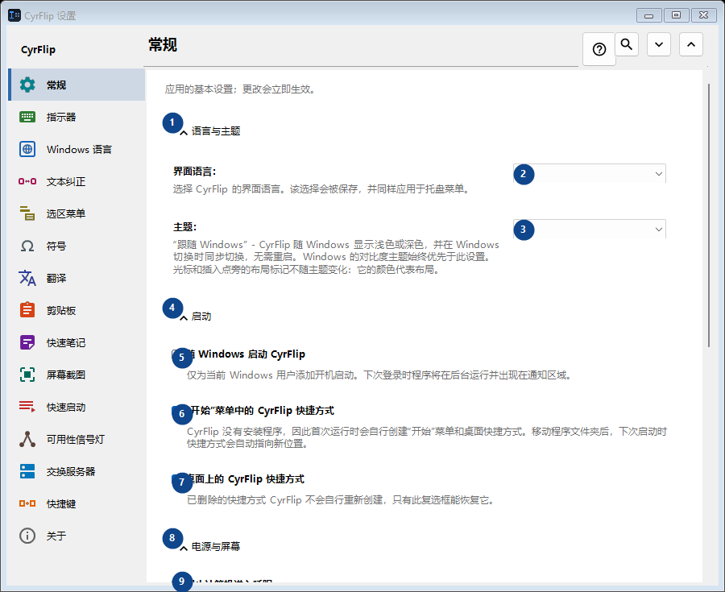
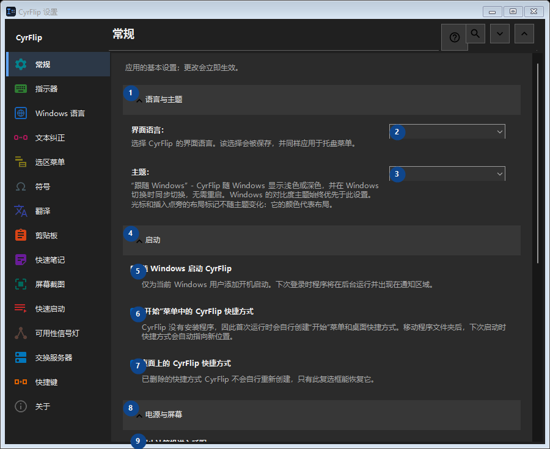

CyrFlip 设置
用途
应用的基本设置；更改会立即生效。


使用顺序
阅读编号说明，选择所需值，然后使用窗口命令继续。
界面元素
1. 语言与主题
需要执行上述操作时使用此命令。接受前请阅读确认提示。
你的快捷键2. 界面语言：
选择或输入旁边标签所指的值。继续前请检查。
你的快捷键3. 主题：
选择或输入旁边标签所指的值。继续前请检查。
你的快捷键4. 启动
需要执行上述操作时使用此命令。接受前请阅读确认提示。
你的快捷键5. 随 Windows 启动 CyrFlip
仅为当前 Windows 用户添加开机启动。下次登录时程序将在后台运行并出现在通知区域。
你的快捷键6. “开始”菜单中的 CyrFlip 快捷方式
CyrFlip 没有安装程序，因此首次运行时会自行创建“开始”菜单和桌面快捷方式。移动程序文件夹后，下次启动时快捷方式会自动指向新位置。
你的快捷键7. 桌面上的 CyrFlip 快捷方式
已删除的快捷方式 CyrFlip 不会自行重新创建，只有此复选框能恢复它。
你的快捷键8. 电源与屏幕
需要执行上述操作时使用此命令。接受前请阅读确认提示。
你的快捷键9. 阻止计算机进入睡眠
启用后，Windows 在空闲时不会睡眠或休眠——适合长时间下载、复制或渲染。状态会被保存：忘记关闭的开关在重启后仍会让计算机保持唤醒——CyrFlip 不会替你盯着电池。
你的快捷键10. 保持屏幕常亮（如播放视频时）
屏幕在空闲时不会熄灭或锁定，就像观看视频时一样。这不会取消密码锁定（Win+L 或安全策略）。状态会被保存：忘记关闭的开关在重启后仍会让屏幕保持常亮。
你的快捷键11. 设置迁移
需要执行上述操作时使用此命令。接受前请阅读确认提示。
你的快捷键12. 导出设置...
需要执行上述操作时使用此命令。接受前请阅读确认提示。
你的快捷键13. 导入设置...
需要执行上述操作时使用此命令。接受前请阅读确认提示。
你的快捷键14. 恢复导入前的设置...
暂无可还原的内容：CyrFlip 会在第一次更改之前保存原始状态。 此控件当前不可用。请先启用相应功能或选择条目。
你的快捷键15. 在“文档”文件夹中保留设置备份
开启后，CyrFlip 会在 Documents\CyrFlip\Backups 中保存所有设置的滚动备份 - 保留最近三份。备份能在 Microsoft Store 重装后幸存：全新安装会找到它并提议恢复。文件包含您的主机、网站和方案 - 请妥善保管。
你的快捷键16. 打开备份文件夹
备份是按日期命名的普通设置文件。打开文件夹即可复制一份或带到另一台计算机。
你的快捷键